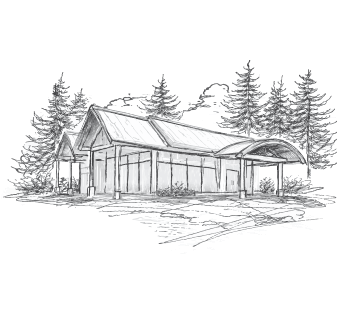

Mead, the original white wine
Discover the flavour of the Sunshine Coast
Tucked between moss-covered forests and the gentle tide of the Salish Sea, Foragers is a place to slow down, gather and savour the Sunshine Coast.
Our mead, or "honey wine," begins with our own hives and the fruit, flowers and botanicals that grow around us.
Each batch is crafted with care, shaped by the character of the season and the abundance of our coastal environment.
Mead is one of the world’s oldest fermented drinks, crafted across cultures for thousands of years. Long before modern winemaking, people discovered that honey, water and time could become something expressive, celebratory and deeply rooted in the land.
At Foragers, we carry that ancient tradition forward in a way that belongs here. Mead is more than a drink. It’s a reflection of the land, the season and the story of this place.

An experience like no other
Come for the mead. Stay for what’s shared around the table.
Every pour at Foragers captures a fleeting moment in the seasons. From the first blossoms of spring to the deep gold of late harvest, no two batches are ever quite the same.
We don’t chase uniformity. We celebrate the expression of land, season and craft. Each glass carries a sense of where it began and the care that brought it to life.
That same philosophy extends to the plate.
Ingredients are chosen for character and flavour, then prepared with a deft touch that lets them speak for themselves.
Mead and food come together at the table, where thoughtful pairings and shared plates invite you to linger, enjoy good company and savour the moment.
Where our story starts
The orchard
Before the meadery, there was the orchard.
Planted on a gentle slope rising from the Salish Sea, the apple trees at Foragers are part of the landscape and part of our craft. These heritage varieties were chosen not for perfect uniformity, but for flavour, resilience and character.
Some of those apples make their way into our limited releases, adding crisp acidity and subtle complexity to our meads. When you taste them, you’re tasting the orchard itself — its patience, its wild edges and its quiet abundance.
Come harvest season, you may even find our orchard apples at select local farmers markets along the coast.

Come experience it for yourself
Join us above the orchard for seasonal mead, small plates and an experience shaped entirely by this place.